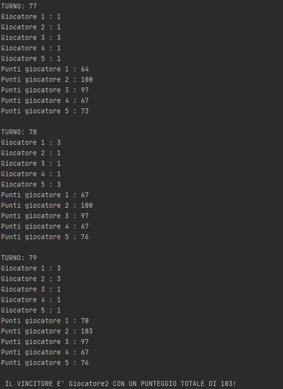
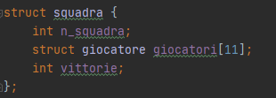

PROGRAMMAZIONE 1 E LAB. DI PROGRAMMAZIONE
RELAZIONE PROGETTO FINALE
NOME: Luigi
COGNOME: Marino
MATRICOLA:0124002257
AA: 2020\21
TRACCE PROPOSTE ALL'ALUNNO
1)Tiro al bersaglio
Si vuole sviluppare un programma per la simulazione di un gioco di tiro a bersaglio.
Si suppone di avere 5 giocatori che si alternano nel tirare una freccetta verso un
bersaglio. Il bersaglio è formato da celle di diverso colore come nella seguente
figura.
Ad ogni colore è associato un punteggio: 6 rosso, 3 verde e 1 arancione. A ogni turno
un giocatore tira la sua freccetta che cade in una certa cella in modo casuale. Dopo il
turno di tutti i giocatori il punteggio viene assegnato solo al giocatore che ha la
freccetta più vicina al centro. In caso di parità si assegna lo stesso punteggio a tutti i
giocatori che effettuano il tiro più vicino al centro. Il gioco termina o quando uno dei giocatori è arrivato a 100 o quando sono
terminati 50 turni.
2)Torneo di calcio
Si vuole gestire un torneo di calcio tra 8 squadre. Inizialmente vengono considerati 88
giocatori identificati dal Cognome e Nome (anche solo lettere casuali). Si suppone che
ogni giocatore possa assumere qualsiasi ruolo in campo. Ad ogni giocatore viene
assegnato un numero casuale nell’intervallo [0,10]. In maniera casuale vengono create 8
squadre.
Il torneo viene simulato facendo scontrare due squadre alla volta. Ogni squadra vincitrice
si scontrerà con la squadra vincitrice di un’altra partita fino ad arrivare ad una singola
squadra vincitrice.
Una partita viene vinta da una squadra secondo la seguente regola:
- La somma dei pesi di una squadra moltiplicata per un numero casuale
nell’intervallo [0, 1] è maggiore della corrispondente operazione sull’altra
squadra (usare un algoritmo divide ed impera ricorsivo per la somma dei pesi
delle single squadre)
- Il processo si ripete finché non si ottiene un vincitore
Simulare 100 volte il torneo e ritornare l’elenco completo delle squadre in ordine
decrescente di vincite. Si stampino i nomi dei giocatori della squadra che ha vinto di più.
SOLUZIONI
TIRO AL BERSAGLIO
ANALISI DELL'ALGORITMO
L'algoritmo in questione presenta tre principali "blocchi" da risolvere, il primo in questione è la simulazione dei tiri da far effettuare ai cinque giocatori che si scontrano, il secondo problema è quello di dover tenere nota del giocatore che totalizza più punti mentre il terzo problema
consiste nell'assegnazione a più giocatori dei punti se effettuano lo stesso punteggio (inteso come punteggio più alto effettuato da due o più giocatori per quel tiro).
CODICE SORGENTE (I COMMENTI SONO PRESENTI NEI FILE .C, .H)
#include "stdlib.h"
#include "time.h"
#include "stdio.h"
#define rosso 6
#define arancione 1
#define verde 3
#ifndef PROGETTO_FINALE_ESAME_FIRSTEXERCISE_H
#define PROGETTO_FINALE_ESAME_FIRSTEXERCISE_H
struct giocatori{
char *nome;
int tiro;
int punti;
};
typedef struct giocatori Giocatori;
int tabellone[7][5];
void tiro(int *);
void mappatura_tabellone(int [7][5]);
void conteggio_tiri(Giocatori [], int *, int *);
#endif //PROGETTO_FINALE_ESAME_FIRSTEXERCISE_H
#include "firstexercise.h"
void tiro(int *pt_tiro) {
int i,j;
i = rand()%7;
j = rand()%5;
*pt_tiro = tabellone[i][j];
}
void mappatura_tabellone(int tab[7][5]) {
for (int i = 0; i < 7; ++i) {
for (int j = 0; j < 5; ++j) {
tabellone[i][j] = arancione;
}
}
for (int i = 2; i < 5; ++i) {
for (int j = 1; j < 4; ++j) {
tabellone[i][j] = verde;
}
}
tabellone[3][2] = rosso;
}
void conteggio_tiri(Giocatori players[], int *max_globale, int *max) {
int tiri_tot = 0;
while (players[*max_globale].punti <= 100 && tiri_tot < 100) {
for (int i = 0; i < 5; ++i) {
tiro(&players[i].tiro);
}
for (int i = 0; i < 5; ++i) {
if (players[i].tiro > players[*max].tiro)
*max = i;
}
for (int i = 0; i < 5; ++i) {
if (players[*max].tiro == players[i].tiro) {
players[i].punti+=players[i].tiro;
}
}
for (int i = 0; i < 5; ++i) {
if (players[i].punti > players[*max_globale].punti)
*max_globale = i;
}
tiri_tot++;
}
}
#include "firstexercise.h"
int main() {
srand(time(NULL));
Giocatori players[5];
players[0].nome = "Giocatore1";
players[1].nome = "Giocatore2";
players[2].nome = "Giocatore3";
players[3].nome = "Giocatore4";
players[4].nome = "Giocatore5";
int max = 0;
int max_globale = 0;
int scelta = 10;
while (scelta!=3) {
printf("Benvenuto nel gioco delle freccette\n1)Inizia a giocare\n2)Regolamento\n3)Esci\n");
scanf("%d",&scelta);
switch (scelta) {
case 1:
for (int i = 0; i < 5; ++i) {
players[i].punti = 0;
}
mappatura_tabellone(tabellone);
conteggio_tiri(players, &max_globale, &max);
printf("Il vincitore e' %s con un punteggio di %d!\n", players[max_globale].nome, players[max_globale].punti);
system("pause");
break;
case 2:
printf("Ogni giocatore effettua il suo lancio e viene assegnato il punteggio al giocatore con il lancio piu' vicino al centro.\nSe il punteggio piu' alto si ripete, viene assegnato ai corrispettivi giocatori il punteggio massimo.\n");
printf("Il primo giocatore che arriva a 100 punti e' il vincitore, altrimenti, al termine di 100 turni automaticamente\nverra' scelto un vincitore in base al punteggio.\n");
system("pause");
break;
case 3:
return 0;
default:
printf("Operazione non consentita.\n");
}
}
}
CREAZIONE DELLA STRUCT GIOCATORE

La struct giocatore contiene un puntatore a caratteri, il nome, una variabile di tipo intero che corrisponde al tiro per ogni turno e un ultima variabile di tipo intero che corrisponde al totale dei punti che vengono assegnati (se assegnati)
ANALISI DELLE FUNCTION
FUNZIONE MAPPATURA TABELLONE

La funzione si occupa della mappatura del tabellone, tramite due cicli for innestati andiamo a determinare il punteggio che si vuole ottenere quando la freccetta colpisce un determinato punto del tabellone, le assegnazioni sono fatte tramite delle DEFINE.
FUNZIONE TIRO
La funzione tiro prende in input un puntatore e determina due indici tramite delle rand (che generano due numeri in un intervallo chiuso [0,6] e [0,4]) ed assegnano a quel determinato tiro il punteggio corrispondente alla posizione del tabellone, mappato precedentemente.
FUNZIONE CONTEGGIO TIRI
Al primo passo di questa funzione andiamo a richiamare la funzione tiro all'interno del ciclo for e passiamo come parametro la variabile punti contenuta all'interno della struct giocatore.
Al secondo passo andiamo a determinare tramite una variabile max inizializzata a zero quale giocatore ha effettuato il tiro più alto, tramite questo ciclo andremo a prendere nota solo di un solo giocatore, anche se ci possono essere più punteggi uguali.
Grazie al terzo passo andiamo a fare dei confronti tra il tiro più alto effettuato e tutti i giocatori, tenendo nota anche dello stesso giocatore che ha totalizzato quel punteggio e andiamo ad assegnare ai punti totali dei giocatori tale punteggio.
L'ultimo passo della function è fondamentale per poter determinare il vincitore e per poter tener testa ad ogni iterazione del primo classificato, grazie ad una variabile max_globale inizializzata a zero e messa a confronto con tutti i punti totalizzati dai giocatori nel complesso ad ogni iterazione, andiamo ad assegnare a max_globale l'indice del giocatore che ha più punti di tutti.
Il tutto è racchiuso all'interno di un ciclo while per rispettare la traccia, la richiesta era infatti quella di determinare il vincitore una volta effettuati cento tiri oppure quando uno dei giocatori è arrivato a 100 punti.
SOLUZIONE FINALE
L'avvio del programma si presenta in questo modo:
Selezionando la prima opzione si avvierà il programma e verranno effettuati i tiri, con il conteggio dei punti totalizzati ad ogni tiro, di seguito tre printscreen con diversi vincitori e diverse situazioni:
In questo esempio possiamo vedere come in 87 turni il giocatore 5 si aggiudica la vittoria, inoltre possiamo anche vedere come si aggiorna la classifica ad ogni tiro.

In questo particolare esempio, precisamente ai turni 78 e 79 possiamo vedere come ad entrambi i giocatori in questione (1 e 5) (1 e 2) vengono assegnati 3 punti, siccome entrambi hanno totalizzato quel punteggio.
In questo caso il vincitore della partita è il giocatore 1 dopo 88 turni giocati.
REGOLAMENTO

TORNEO DI CALCIO
ANALISI DELL'ALGORITMO
L'algoritmo torneo di calcio richiede una particolare attenzione su due problemi interni, il primo obiettivo è quello di generare e creare le squadre e i giocatori in modo totalmente casuale, mentre un attenzione particolare cade nella creazione della funzione che si occuperà
di calcolare quale squadrà vince e con quale si dovrà scontrare successivamente.
CODICE SORGENTE (I COMMENTI SONO PRESENTI NEI FILE .C, .H)
#include "stdio.h"
#include "string.h"
#include "time.h"
#include "stdlib.h"
#ifndef SECONDO_ESERCIZIO_PROGETTO_FINALE_SECONDEXERCISE_H
#define SECONDO_ESERCIZIO_PROGETTO_FINALE_SECONDEXERCISE_H
int somma_pesi_ricDI(int [], int ,int );
struct giocatore{
char nome;
char cognome;
int numero_maglia;
int peso;
};
struct squadra {
int n_squadra;
struct giocatore giocatori[11];
int vittorie;
int peso;
};
typedef struct giocatore Giocatore;
typedef struct squadra Squadre;
void crea_squadre(Squadre []);
void calcola_pesi(int [],Squadre []);
void ordinamento_per_inserimento(Squadre [], int );
int appartiene(Giocatore [], int );
void scontri(Squadre [], int, Squadre []);
#endif //SECONDO_ESERCIZIO_PROGETTO_FINALE_SECONDEXERCISE_H
#include "secondexercise.h"
int somma_pesi_ricDI(int a[], int primo, int ultimo) {
int mediano;
if (primo==ultimo)
return a[primo];
else {
mediano = (primo + ultimo)/2;
return
somma_pesi_ricDI(a, primo, mediano) + somma_pesi_ricDI(a, mediano +1,ultimo);
}
}
void crea_squadre(Squadre teams[]) {
for (int i = 0; i < 8; ++i) {
teams[i].n_squadra = i + 1;
teams[i].vittorie = 0;
for (int j = 0; j < 11; ++j) {
teams[i].giocatori[j].nome = 'A' + (rand() % 26);
teams[i].giocatori[j].cognome = 'A' + (rand() % 26);
teams[i].giocatori[j].peso = 60 + rand()%(96-60);
teams[i].giocatori[j].numero_maglia = 100;
int k = 0;
while (k<1) {
int tmp = rand()%11;
if (!appartiene(teams[i].giocatori,tmp)) {
k++;
teams[i].giocatori[j].numero_maglia = tmp;
}
}
}
}
}
void calcola_pesi(int pesi_squadra[], Squadre teams[]) {
for (int i = 0; i < 8; ++i) {
for (int j = 0; j < 11; ++j) {
pesi_squadra[j] = teams[i].giocatori[j].peso;
}
teams[i].peso = somma_pesi_ricDI(pesi_squadra, 0, 10);
}
}
void ordinamento_per_inserimento(Squadre a[], int n){
int i,j;
Squadre el_da_ins;
for (i=1;i
{
j = i-1;
el_da_ins = a[i];
while (j>=0 && el_da_ins.vittorie>a[j].vittorie)
{
a[j+1] = a[j];
j--;
}
a[j+1] = el_da_ins;
}
}
int appartiene(Giocatore arr[], int chiave) {
for (int i = 0; i < 11; ++i) {
if (chiave==arr[i].numero_maglia)
return 1;
}
return 0;
}
void scontri(Squadre pesi[],int ind, Squadre copia[]) {
int peso1 = 0, peso2 = 0, cont = 0;
for (int i = 0; i < ind; i+=2) {
peso1 = pesi[i].peso*(rand()/(double)RAND_MAX);
peso2 = pesi[i+1].peso*(rand()/(double)RAND_MAX);
if (peso1>peso2)
copia[cont] = pesi[i];
else
copia[cont] = pesi[i+1];
cont++;
}
}
#include "secondexercise.h"
int main() {
srand(time(NULL));
Squadre teams[8];
int pesi_squadra[11] = {0};
Squadre quarti[4];
Squadre semifinale[2];
Squadre finalista[1];
for (int i = 0; i < 8; ++i) {
teams[i].n_squadra = i + 1;
teams[i].vittorie = 0;
}
crea_squadre(teams);
calcola_pesi(pesi_squadra,teams);
int giocate_tot = 0;
while (giocate_tot<100){
scontri(teams,8,quarti);
scontri(quarti,4,semifinale);
scontri(semifinale,2,finalista);
for (int i = 0; i < 8; ++i) {
if (finalista[0].n_squadra==teams[i].n_squadra)
teams[i].vittorie++;
}
giocate_tot++;
}
ordinamento_per_inserimento(teams,8);
printf("CLASSIFICA TORNEO:\n");
for (int i = 0; i < 8; ++i) {
printf("%d) Squadra %d - Vittorie : %d - Peso : %d\n", i+1,teams[i].n_squadra, teams[i].vittorie, teams[i].peso);
}
printf("\nFORMAZIONE DELLA SQUADRA VINCENTE (SQUADRA %d) :\n", teams[0].n_squadra);
for (int i = 0; i < 11; ++i) {
printf("Nome: %c\t Cognome: %c\tNumero Maglia: %d\tPeso: %d\n", teams[0].giocatori[i].nome, teams[0].giocatori[i].cognome, teams[0].giocatori[i].numero_maglia, teams[0].giocatori[i].peso);
}
return 0;
}
CREAZIONE DELLE STRUCT GIOCATORE E SQUADRA
STRUCT GIOCATORE
STRUCT SQUADRA

ANALISI DELLE FUNCTION
FUNZIONE SOMMA RICORSIVA CON DIVIDE ET IMPERA
FUNZIONE APPARTIENE
Prende in input un array di tipo Giocatore e una chiave, verificando poi se la chiave è presente all'interno dell'array.
FUNZIONE ORDINAMENTO PER INSERIMENTO
Una funzione che ordina gli elementi di un array di tipo Squadra in senso decrescente.
FUNZIONE CREA SQUADRE
La funzione prende in input un array di tipo Squadre ed assegna casualmente una lettera per il nome, una per il cognome e un numero casuale da 0 a 10 senza ripetizioni per ogni giocatore di una squadra.
FUNZIONE CALCOLA PESI
Questa funzione richiama la funzione somma di un array (un array che contiene i pesi di una singola squadra) ricorsiva per mettere all'interno di un array (che conterrà la somma dei pesi di ogni squadra) il risultato della function.
FUNZIONE SCONTRI
La funzione scontri prende in input due array e un intero che determina il size da utilizzare all'interno del ciclo for.
Sono stati creati tre array di tipo Squadra che permettono di tener nota dei vincitori di ogni scontro effettuato. Al primo passo inseriamo come input tutti i pesi delle squadre e andiamo ad inserirli nell'array Quarti [4], al secondo passo la funzione viene richiamata e prenderà in input l'array quarti e andrà a determinare i
vincitori inserendoli nell'array Semifinale[2], infine la funzione viene richiamata l'ultima volta per determinare il vincitore e viene aggiunto all'interno dell'array Finalista[1] la squadra vincente.
La funzione verrà richiamata tre volte (per cento tornei) all'interno del main per poter permettere di stabilire il vincitore.
SOLUZIONE FINALE
FUNZIONAMENTO
L'ALGORITMO DI BASE CREA IN MODO TOTALMENTE RANDOMICO DELLE SQUADRE TRAMITE L'ASSEGNAZIONE DI 11 GIOCATORI DETERMINATI DA UN NOME, UN COGNOME, UN PESO E IL NUMERO DELLA MAGLIA, UNICO PER OGNUNO DI LORO ALL'INTERNO DELLA SQUADRA
AVVIANDO IL PROGRAMMA SI AVRA' DIRETTAMENTE LA FINE DELL'ALGORITMO CON L'ESECUZIONE SENZA ALCUN PRINT, BASTERA' TOGLIERE I COMMENTI AI VARI PRINT ALL'INTERNO DEL MAIN PER POTER TENER TRACCIA DI TUTTI E CENTO I TORNEI CHE VERRANNO EFFETTUATI
TRAMITE L'UTILIZZO DI VARIE FUNCTION RIUSCIAMO A CREARE IN MODO RANDOMICO 8 SQUADRE DA 11 GIOCATORI, OGNUNO DEI QUALI CON DELLE CARATTERISTICHE, TRA CUI IL NUMERO DI MAGLIA, UNICO PER OGNUNO DI LORO.
IL FUNZIONAMENTO VERO E PROPRIO DEL PROGRAMMA AVVIENE GRAZIE ALLA FUNCTION SCONTRI CHE PERMETTE DI DECRETARE IL VINCITORE DI OGNI TORNEO, IL TUTTO ALL'INTERNO DI UN WHILE CHE GESTISCE IL NUMERO DI TORNEI EFFETTUATI.
LE FUNCTION ANALIZZATE SONO RICHIAMATE TUTTE.
TEST DI ESECUZIONE
Avviando il programma inizierà il torneo e vi saranno ad ogni torneo comunicati i vincitori di ogni partita, fino al vincitore del torneo intero.
Alla fine inoltre verrà stilata la classifica totale in ordine decrescente e verrà stampata la formazione della squadra con più vittorie su 100 tornei effettuati.
Nell'immagine possiamo notare come il vincitore di quel torneo è la squadra numero 8, ma nonostante ciò il vincitore totale resta la squadra 6, in quanto vincitrice di 18 tornei.
Nel secondo test di esecuzione possiamo notare come la squadra numero 7, vincitrice di 23 tornei si aggiudica la vittoria con un peso squadra di 852 kg.
Nell'ultimo print-screen, la squadra vincitrice dell'ultimo torneo aggiunge un altra vittoria al totale e vince anche l'intera competizione basata su cento tornei.